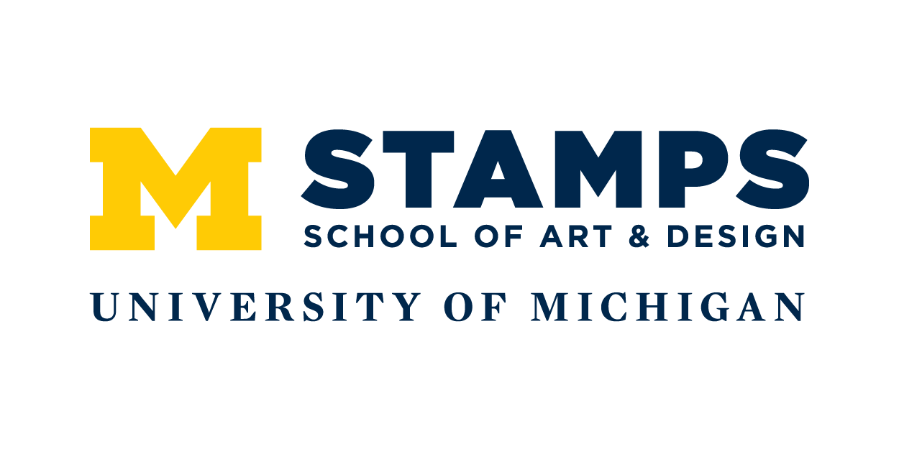
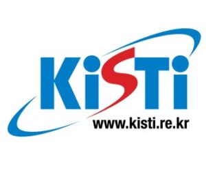

EDUCATION
Academy of the Holy Angels Demarest, NJ
University of Michigan Ann Arbor, MI
BA in UI/UX Design in School of Art and Design & Minor in History of Art
EXPERIENCE

Online Database Assistant, Amore Pacific Retails Sales Team
August 2018; Seoul, Korea
Organized exisiting product database for both online and offline sales.
Managed beauty products for distribution companies through online system.
Participated in planning marketing stragedies on new promotions by providing ideas on the concept and design.

Academic Peer Advisor, School of Art and Design Academic Services
March 2016 - Present; Ann Arbor, MI
Worked with students regarding academic requirements toward degree and navigating through university resources.
Led open house and orientation session.
Designed posters and organizers to promote students' convenience.

Design Professional, KISTI (Korea Institute of Science&Technology Information)
June 2017- Jan 2018; Seoul, Korea
Designed posters and banners for advertising events on the website.
Edited videos using Final Cut and analyzed Excel sheets.
Monitored website to check users' activities.
Graphic Designer/ Event Coordinator, Korean International Assocation
Sep 2015- Apr 2016; Ann Arbor, MI
Designed posters and tickets to advertise social and academic events hosted by the association.
Organized both social and academic events to help Korean international students to interact with each other.
Graphic Designer, Michigan Hybrid Racing
Nov 2016- Jan 2017; Ann Arbor, MI
Designed logos to help create a brand concept for a student-run multidisciplinary design team.
Docent, Office Assistant, Monet Exhibition
May 2016 - June 2016; Seoul, Korea
Led groups of visitors as a docent after thoroughly researching the material and organized the gallery environment.
Student Programming and Advisory Council, University of Michigan Museum of Art
Sep 2015 - Apr 2016; Ann Arbor, MI
Organized and staffed activities to encourage students and the public to become involved in UMMA events.
Thoroughly familiarized myself with the system within the museum by attending workshops.
SKILLS
Adobe Creative Cloud (Photoshop, Illustrator,XD),
Python,
Processing (JAVA),
HTML, CSS, SQL,
Microsoft Office (Word, Powerpoint, Excel),
Final Cut Pro X,
Korean, English
CLASSES TAKEN
School of Art & Design
Typography, Creative Programming,
Interface Design, UI & UX Design,
Visual Identity & Branding,
Interaction Design
School of Information
Data-Oriented Programming,
Online Media Analysis,
Graphic Design,
Human Computer-Interaction,
Web Design